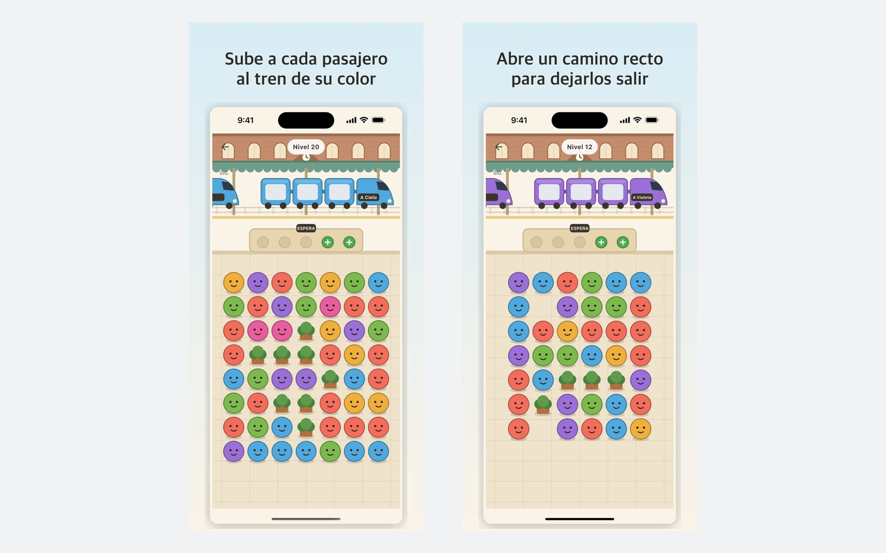
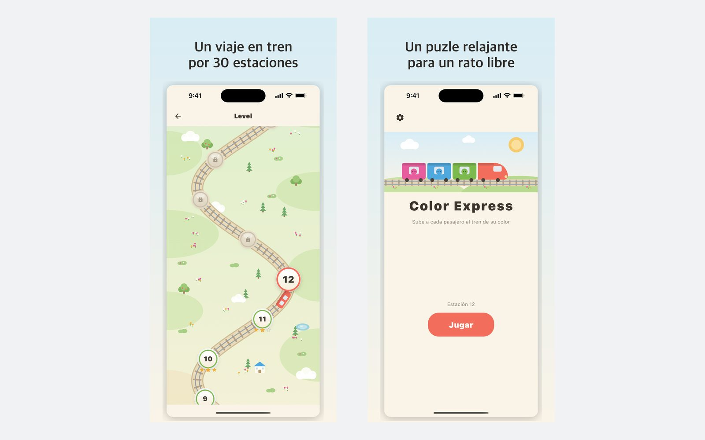

Una regla, y es estricta
Una línea recta e ininterrumpida hasta el borde del tablero: arriba, abajo, izquierda o derecha. Girar una esquina no es un camino. Todo lo demás sale de esa única frase.
Un tren de color para en el andén con tres asientos. Toca a los pasajeros cuyo color coincide y suben, pero solo si una línea recta de salida está completamente despejada. Sin cronómetro, sin vidas, sin registro.

La idea
Emparejar colores lleva un segundo; sacar al pasajero es lo que cuesta pensar. Un pasajero solo puede salir por una línea recta — arriba, abajo, izquierda o derecha — que llegue despejada hasta el borde del tablero. Girar una esquina no es un camino. Por eso el tablero se lee de fuera hacia dentro: despeja el borde para abrir la fila de detrás, y luego la siguiente.
Qué incluye
Una línea recta e ininterrumpida hasta el borde del tablero: arriba, abajo, izquierda o derecha. Girar una esquina no es un camino. Todo lo demás sale de esa única frase.
Cada tablero se genera y después lo comprueba un solucionador: tiene que poder ganarse, y a la vez no poder ganarse sin usar el banco. Los que fallan cualquiera de las dos pruebas se descartan y no llegan a la app.
Cada uno de los 70 niveles guarda seis tableros verificados y elige uno al azar, también al reintentar. El nivel que fallaste no es el nivel que vuelves a jugar.
Los pasajeros de otro color esperan en un banco con muy pocas plazas. Si se llena y no queda salida, el nivel termina. Los niveles avanzados no traen más pasajeros: traen menos plazas.
La valoración cuenta cuántos pasajeros tuviste que dejar en el banco, no los puntos. Tres estrellas significa que apenas lo usaste.
Piensa un segundo o un minuto, da igual. Nada baja, nada se agota y nada te pide volver mañana.

De dónde viene
Empezó en julio de 2026 como un prototipo de emparejar colores hecho en Flutter y Flame: pasajeros sobre una cuadrícula y un ascensor que se llevaba a tres cada vez.
La regla cambió casi enseguida. Salir era antes una búsqueda tipo laberinto, y así el tablero no se leía de un vistazo. Sustituirla por una única línea recta hasta el borde hizo visible cada movimiento y, a cambio, mucho más difícil planificar.
El ascensor pasó a ser un tren, los colores llegaron a siete y los niveles dejaron de escribirse a mano: ahora un solucionador construye y comprueba los 70 niveles, con seis tableros cada uno.
Privacidad
Sin cuenta, sin nube y sin clasificación a la que subir nada. Tu progreso son unos pocos números en el almacenamiento del dispositivo y se borra junto con la aplicación. El juego es gratuito y lleva anuncios, lo que significa que Google AdMob recoge el identificador de publicidad habitual e información del dispositivo, todo ello detallado en la política de privacidad.
Gratis y funciona sin conexión: la red solo se usa para los anuncios. Próximamente en App Store y Google Play.